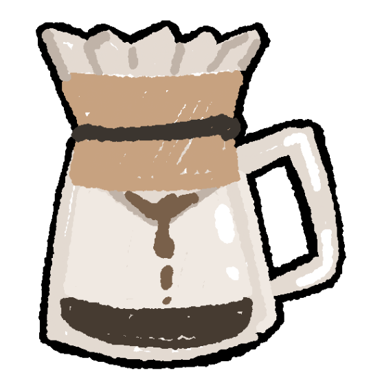
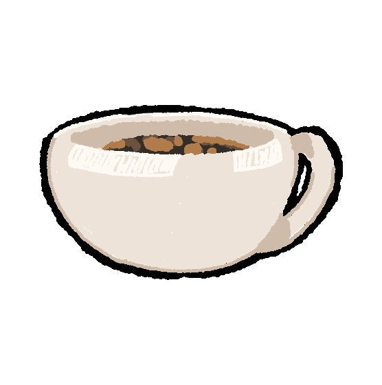
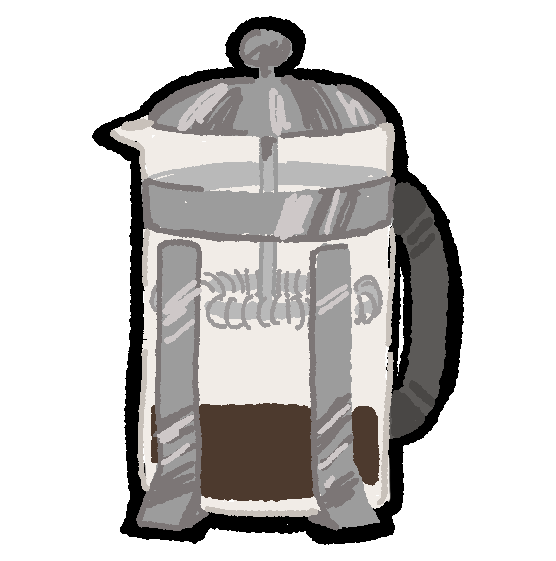
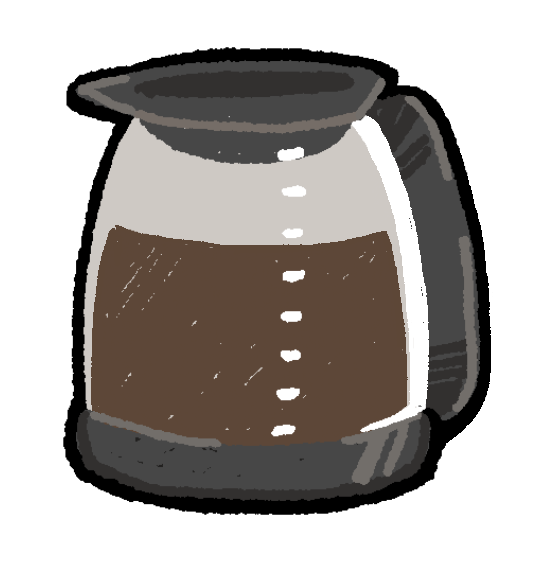

You Are What You Brew
I have started my mornings in many ways. These include, but are in no way limited to: sleeping in until the afternoon, startled awake at 4 AM by a package delivery, to the sound of my neighbors screaming bloody murder, to my roommate setting off the fire alarm, and — on one occasion — to a man standing on the fire escape outside my window.
As eclectic as these awakenings are, one thing remains consistent across all of them. No matter how frazzled, confused, or fearful of my life I am in that moment, I always manage to find my way to the kitchen a few minutes later. Once there, I set the electric kettle to boil, I grab my bag of ground espresso beans that I buy monthly from Madman Espresso on University Place, and I extract my roommate’s Bialetti moka pot from where it sits on the drying rack.
Two spoonfuls of coffee grounds go into the filter funnel. Untamped — that’s important. If you pack the grounds too densely, the steam pressurization doesn’t flow properly. I screw the upper chamber on tightly after filling the bottom with boiling water, burning my fingertips in the process, and set the moka pot on the stove on low.
A few minutes later, a gentle bubbling tells me my espresso is done, and I turn the stove off. At that point, I have my glass of ice ready, filled halfway with Oatly full fat oat milk. I let the moka pot sit for a second, to let any stray grounds settle to the bottom, and then I pour it into my glass. Finally, I top it off with one more splash of oat milk.
That’s how I get to drink the best coffee of my life, every single morning. And if you’re thinking that I have written this introduction with some unnecessary zeal and, perhaps, excessive brand loyalty, you may be right. Rest assured I have not been sponsored by any company to name-drop their products. Whatever room I have for selling out in my heart is fully reserved for other more important things, like drinking the brilliant coffee I have just finished describing.
I had a point here
The thing is, millions of people would loudly disagree with me on the way I make coffee, contesting my claim to brilliance. Some might say it's an affront to add milk, oat or not. Others might point out that my use of a moka pot significantly diminishes the oil return on the beans. A select few would tut at my decision to put the pot on low heat.
Millions might even be an understatement. According to the National Coffee Association, coffee is the most popular drink in America after bottled water. Two out of three adults drink coffee every day in the United States, and that number grows to one billion out of eight billion when expanded worldwide. That's a lot of people with a lot of opinions!
And how do these people drink coffee? While there's no individualized global survey, we can zoom in and generalize. In 2023, YouTuber and former World Barista Champion James Hoffman hosted the Great American Coffee Taste Test and conducted an anonymized demographic survey on 4000+ participants. From age ranges to gender to political inclination, Hoffman recorded these tasters' backgrounds and their coffee tastes, and published the responses.
There may be no definitive "best coffee," but all of this demographic and preference data show that there are certainly "most numerically dominant coffees." And while popularity doesn't indicate quality, you can certainly compare someone's coffee tastes to that of their larger demographic.
Case in point: in Hoffman's survey, I would be broken down into the following categories.
Age range
18-24
Gender
Non-binary
Ethnicity
Asian
Political alignment
Democrat
Using Hoffman's survey responses, we can then predict my favorite coffee drinks by demographic groups.
18-24
Drip coffee
Non-binary
Latte
Asian
Drip coffee
Democrat
Drip coffee
One out of four is not groundbreaking prediction (not that I was expecting it to be), but we learn that drip coffee wins over most demographics. In fact, across the four categories listed above — age, gender, ethnicity, and political alignment — the overwhelmingly most popular choice is pour over, or drip coffee. Only for a select few groups (women, non-binaries, and Native Americans) do lattes triumph.
Lattes, which broadly fall into the category of espresso alongside macchiatos, Americanos, and other coffee shop offerings, are popular for a good reason: it's great for those who don't like the taste of coffee but need the caffeine. But then why is drip coffee so in demand? And how do the rest of coffee drinkers make their cups?




After drip coffee and espresso brews, people are fairly split between using French presses, coffee machines, and cold brew concentrate. Cold brew is popular among those who prefer convenience, as a bottle of concentrate can last you weeks, and your morning drink can be done in a few seconds.
Espresso is similarly convenient. After heating up the machine, which takes ~30 seconds on average, the actual brewing process takes very little time; maybe another 20 seconds until you get a versatile shot of creamy espresso. Drip coffee, on the other hand, takes around 5 minutes to make — but it's one of the cheapest ways to brew coffee, and the slow duration lets the coffee beans release more of its flavor. Accordingly, pour over enjoyers tend to be more passionate about coffee than a casual drinker.
How do you make your coffee?
Now that you have your cup of coffee, what finishing touches are you putting in it? For 64% of survey respondents, the answer is none. Of these respondents, black coffee is most popular with White/Caucasian men between the ages of 25 to 34, with no other demographic coming close.
For those who opt to customize their drink, from making a latte to a caramel macchiato, whole milk and plain sugar remain the most common additives. Although, oat milk is the most common dairy alternative, and seems to be rapidly catching up in overall popularity.
Demographic-wise, people are pretty evenly split on dairy and sweetener choices. But when it comes to where you drink your coffee, there are some pretty significant splits. Do you take your time at home, brewing a perfect cup to read the news with? Are you shoving that cup in a bag or pulling up at a drive-thru, on a time crunch to get somewhere? Maybe you only decide to get your fix once you're settled in the office; or maybe you save coffee as a treat, to be enjoyed at a cafe, perhaps with a journal or book.
Regardless of whether or not those who drink coffee at home are also remote workers, White/Caucasian men take up the majority. In contrast, those who drink coffee at work are more likely to be Asian/Pacific Islander men.
Where do you drink your coffee, and what group does that put you in?
What does all of this tell us?
It's unlikely that reverse-engineering one's coffee order is going to make it onto a detective show any time soon, but it's undeniable that certain groups interact with their coffee in distinctive ways.
Can this method replace horoscopes?
Horoscope embed from eAstrolog.com
No idea! Let me know what you think.
All data used was taken from this dataset. Idea for this project came from Data Is Plural.
(Or back to quinnmadethis.com.)